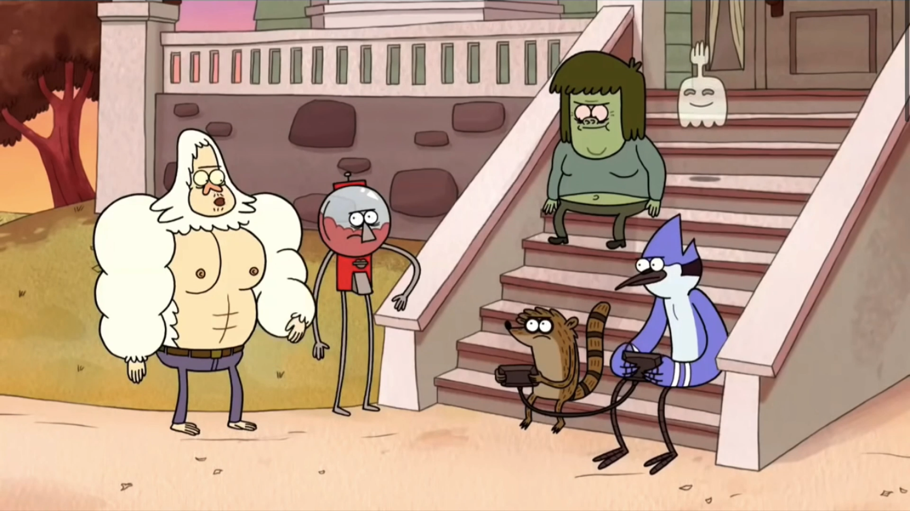
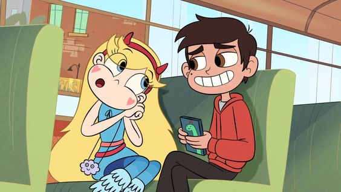
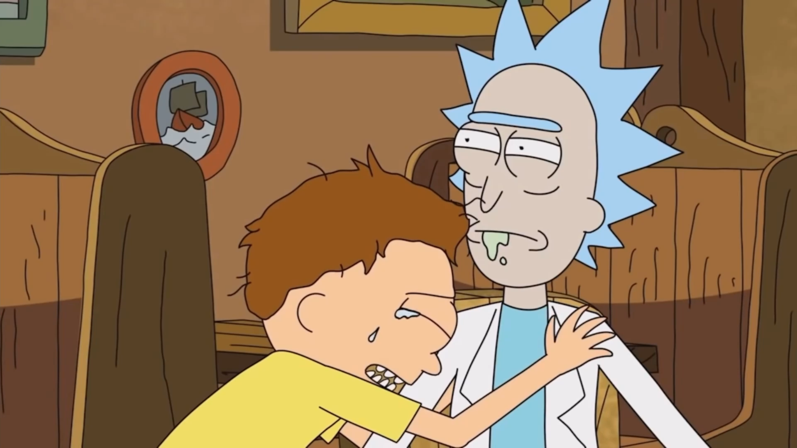
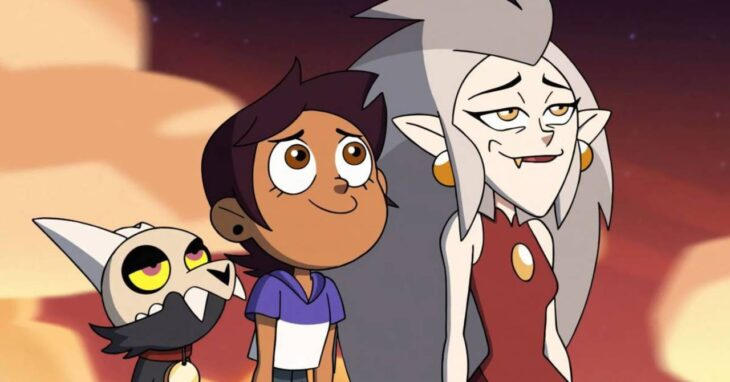

2D Animation
2D animation is the art of creating movement in a two-dimensional space. This includes characters, creatures, FX, and backgrounds. The movement created when individual drawings sequenced together over time. One second of time is usually divided into 24 frames.
Regular Show

This is a 2D animated show called Regular Show from Cartoon Network Studios. The director is J. G. Quintel. It's about two characters named Mordecai and Rigby. They work in a local park and get into strange situations whenever they slack off.
star vs forces of evil

It is an animated series created by Brian H. Kim for Disney Channel and Disney XD. Star Butterfly receives a family wand for her birthday, which sets her castle on fire. As a result, she has to adjust to school life and protect her wand while on Earth.
Here are Some examples of well know 2D animations are:
- The Simpsons
- Rick and Morty
- Family Guy
- The Owl House
Rick and morty

Rick and Morty is another 2D animated show written by Dan Harmon on Adult Swim. Rick is an alcoholic and lives with family. Besides Rick's building gadgets, he takes his noble but stupid grandson Morty on crazy space adventures.
Owl House

The series created by Dana Terrace for Disney Television Animation. A human girl discovers a portal to another world, where she meets a rebellious witch and a warrior. A new family welcomes her, and she discovers her dream of becoming a witch.
There are all types of software that artist use. For example:
- Toon Boom Harmony
- Synfig Studio
- Pencil 2D
- OpenToonz
- Moho Pro
- TupiTube
Responsibilities of a 2D Animator
Interested in becoming a 2d animator? You will need good planning and organisational skills as 2D animation is time consuming. You will need to sketch designs, characters, and develop storyboards. You will create special effects, animate scenes, and create backgrounds.